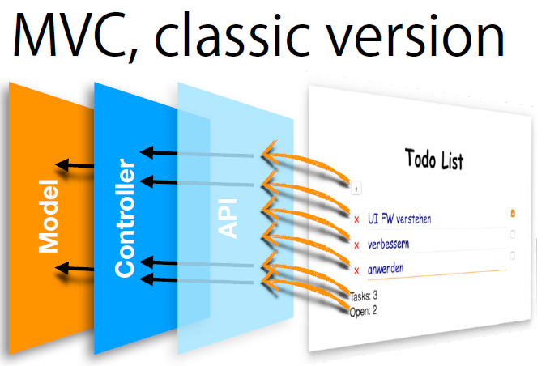

JS-Toolbox1. Intro & FunctionsCanvasKey eventsGame loopFundamentals of Lambda Calculus & Functional Programming in JavaScript - YouTube VideoExample2. LambdaJavaScript VariablesIIFEAlpha TranslationBeta ReduktionEta ReduktionExamples3. Algebraic Data TypesAtomic Lamda TermsPair, Product TypePair encodingEither, Co-Product, SumSpecial Case: MaybeExample4. Map, Filter, ReduceMapFilterReduceExamples5. Scripting, PWA, Plotter, ExcelWhy Scripting?Progressive Web AppFunction Plotter: evalFunction Plotter: Function()Scripting CautionExamples6. ObjectsOpen & dynamicClosed & explicitMixed & classifiedExample7. Classesclass Keywordextends KeywordPrototype chainExample8. Moves, User InterfacesCompare with DancingRecognize MovesTask 1: Improve the TestsTask 2: Todo List ExampleMoves - Your Choice0: Explore1: Start at the End2: Extract3: Abstract4: Reorganize5: Release6: RetrospectiveObservationsExample9. UI Engineering, MVCCallback - HOFObservableMVCExample10. Async ProgrammingTestingCallback, EventsPromiseAsync / AwaitExample11. Data FlowCoordination schemataNo CoordinationSequenceResult DependencyScheduler IdeaDataFlowVariable12. ModulesWhy Modules?DistinguishES6 ModulesPackage ManagerBuild ToolsLegacy module systemsLegacy Module Loader / BundlerModules are asyncImport VariantsExport VariantsImpactsSOP - Single Origin PolicyUseful ToolsResources13. Transpilers: TypeScript, PureScript, ElmWhat they have in commonThe CycleTypeScriptElmPureScript / PuxCalling JavaScript (FFI)ApplicabilityParadigmApproachCoolMore Transpilers14. Crazy JavaScript
"You only understand what you can build by yourself => use no dependencies"
xxxxxxxxxxconst canvas = document.getElementById("canvas");const context = canvas.getContext("2d");context.fillStyle = "black";context.fillRect(0, 0, canvas.width, canvas.height);xxxxxxxxxxconst rightArrow = 39;const leftArrow = 37;window.onkeydown = evt => { (evt.keyCode === rightArrow) ? … : … ;};xxxxxxxxxxsetInterval( () => { nextBoard(); display(context);}, 1000 / 5);A function plus that returns the sum of its arguments:
xxxxxxxxxxconst plus = x => y => x + y;
Only use let and const:
xxxxxxxxxxlet x = ; // mutable, local scopeconst x = ; // immutable, local scopeimmediately invoked function expression
xxxxxxxxxxfunction foo() {..}; foo()( function foo() {..} ) ()( function() {..} ) ()( () => {..} ) ()xxxxxxxxxxconst id = x => xconst id = y => yxxxxxxxxxx( f => x => f(x) ) (id) (1)( x => id(x)) (1)( id(1))(x => x) (1)1xxxxxxxxxxx => y => plus (x) (y)x => plus (x) plusF3 is a proper eta reduction of F2
xxxxxxxxxxconst id = x => x;const konst = x => y => x;const F1 = x => y => konst (id) (x) (y);const F2 = x => konst (id) (x);const F3 = konst (id);a1 is a proper beta expansion of a2
xxxxxxxxxxconst id = x => x;const a1 = y => id(y);const a2 = y => y;a2 is a proper beta reduction of a1
xxxxxxxxxxconst id = x => x;const a1 = y => id(y);const a2 = y => y;id1 and id2 are alpha-equivalent
xxxxxxxxxxconst id1 = x => x;const id2 = y => y;
"I recommend that you write programs as though JavaScript had been designed correctly."
- Douglas Crockford, How JavaScript works, p. 6.2
xxxxxxxxxx// atomsconst id = x => x;const konst = x => y => x;// derived true, false, and, or, equals, …const F = …;const T = …;xxxxxxxxxxconst pair = x => y => f => f(x)(y);const fst = p => p(T);const snd = p => p(F);xxxxxxxxxxconst person = firstname => lastname => age => pair (pair(firstname)(lastname)) (age);const firstn = p => fst(fst(p));const lastn = p => snd(fst(p));const age = p => snd(p);xxxxxxxxxx// dual of the productconst pair = x => y => f => f(x)(y); // one ctorconst fst = p => p(T); // accessor 1const snd = p => p(F); // accessor 2// here we have now the basic sum typeconst Left = x => f => g => f(x); // ctor 1const Right = x => f => g => g(x); // ctor 2const either = e => f => g => e(f)(g); // accessorxxxxxxxxxx// go around null / undefinedconst Nothing = Left ();const Just = Right;const maybe = either;maybe (expressionThatMightGoWrong) (handleBad) (handleGood);xxxxxxxxxx// error handling with eitherconst eShow = result => result (msg => msg) (val => "Result is:" + val);
"Developers seem to love those languages most, in which they understood the value of higher-order functions."
- @ProfDKoenig
xxxxxxxxxxconst times = a => b => a * b;const twoTimes = times(2);[1, 2, 3].map(x => times(2)(x));[1, 2, 3].map(times(2));[1, 2, 3].map(twoTimes);xxxxxxxxxxconst odd = x => x % 2 === 1;[1, 2, 3].filter(x => x % 2 === 1);[1, 2, 3].filter(x => odd(x));[1, 2, 3].filter(odd);xxxxxxxxxxconst plus = (accu, cur) => accu + cur;[1, 2, 3].reduce((accu, cur) => accu + cur);[1, 2, 3].reduce(plus);// variant with initial accu value as 2nd argument// then cur starts at first element[1, 2, 3].reduce(plus, 0);xxxxxxxxxx// function that checks which numbers in an array are divideable // by the given argumentconst divides = x => y => y % x === 0;xxxxxxxxxx// function that joins values of an array together with given argumentconst join = (a) => (b, c) => b + a + c;
"Unfortunately, JS has a misfeature called Automated Semicolon Insertion. It can fail in bad ways, so write like a professional."
- Douglas Crockford, "How JavaScript works."
xxxxxxxxxxdocument.write('<script src=...');Works as if the code was copied verbatim in the place of the eval. => You share the scope.
xxxxxxxxxxeval('some code');Function() is like eval() but declares parameters and executes in the global scope. It creates a reference.
xxxxxxxxxxconst add = Function('x', 'y', 'return x+y');add(1, 2);add(2, 3); // no need to re-parse
In JavaScript you cannot exclude possibly harmful side effects from scripts that are loaded from foreign sources...
=> Privacy, Security, Stability
Calculate the bonus with given attributes:
xxxxxxxxxxconst bonusCalculation = x => x.bonus = eval(x.revenue) * factor_;Calculate the bonus with given attributes using Function():
xxxxxxxxxxconst bonusCalculation = Function('x', 'return x.bonus = x.revenue *' + factor_);
"It's called object-oriented to tell you what you should do with it: object!"
- Phil Wadler, quoted from memory
JS "Objects".
xxxxxxxxxxconst good = { firstname : "Good", lastname : "Boy", getName : function() { return this.firstname + " " + this.lastname }};// no safety but super dynamic// unobvious how to share structure// beware of "this"! See Adam Breindl last week.Closure scope, no "this".
xxxxxxxxxxfunction Person(first, last) { let firstname = first; // optional let lastname = last; return { getName: function() { return firstname + " " + lastname } } }}// best safety, easy to share structure, but no classDepends on "new". Is the "default" construction.
Still dynamic but all "instances" can be changed at once by changing the prototype!
xxxxxxxxxxconst Person = ( () => { // lexical scope function Person(first, last) { // ctor, binding this.firstname = first; this.lastname = last; } Person.prototype.getName = function() { return this.firstname + " " + this.lastname; }; return Person;}) (); // IIFE// new Person("Good", "Boy") instanceof PersonCheck wether two Arrays are equal:
xxxxxxxxxxArray.prototype.eq = function(array) { if (this.length !== array.length) return false; for (let i = 0; i < array.length; i++) { if (this[i] !== array[i]) return false; } return true;}
"Classes tend to be bad modules."
- D. Crockford, How JS works, p. 17.0
class Keywordxxxxxxxxxxclass Person { constructor(first, last) { this.firstname = first; this.lastname = last } getName() { return this.firstname + " " + this.lastname }}// new Person("Good", "Boy") instanceof Personextends Keywordxxxxxxxxxxclass Student extends Person { constructor (first, last, grade) { super(first, last); // never forget this.grade = grade; }}const s = new Student("Top","Student", 5.5);xxxxxxxxxxconst s = new Student()// s.__proto__ === Student.prototype;// Object.getPrototypeOf(s) === Student.prototype;// => s instanceof StudentFunction composition -> it must work for all functions!
xxxxxxxxxxFunction.prototype.then = function(bracketFunc) { // this(number -> result of the first function // with the value at the end f.e. ..(1)) const compose = bracketFunc => number => bracketFunc( this(number) ); return compose(bracketFunc);}
"Live's a dance you learn as you go. Sometimes you lead, sometimes you follow."
- John Michael Montgomery
Failsafe callback:
xxxxxxxxxxconst failSafe = defaultValue => callback => argToCallback => { return argToCallback === null ? defaultValue : callback(argToCallback);}
"Frameworks and APIs change fast. Software design principles are evergreen. Learn principles that translate across language barriers."
- Eric Elliot
Higher-order Function.
xxxxxxxxxxfunction test(name, callback) { const assert = Assert(); // prework callback(assert); // callback report(name, assert.getOk()); // postwork}xxxxxxxxxxconst Observable = value => { const listeners = []; // many return { onChange: callback => listeners.push(callback), getValue: () => value, setValue: val => { if (value === val) return; // protection // ordering value = val; listeners.forEach(notify => notify(val)); } }};
Using Observable that it keeps track of the sum of all values:
xxxxxxxxxxtrackable.onChange( _ => sum += trackable.getValue() );
"Don't call us. We call you."
- Hollywood
xxxxxxxxxxtest("todo-memory-leak", assert => { const todoController = TodoController(); todoController.onTodoAdd(todo => { todoController.onTodoRemove( (todo, removeMe) => { removeMe(); // idea: self remove }); }); for (let i=0; i<10000; i++){ const todo = todoController.addTodo(); todoController.removeTodo(todo); }});xxxxxxxxxxfunction start() { //... window.onkeydown = evt => { // doSomething(); }; setInterval(() => { // doSomething(); }, 1000 / 5);}Most prominent use:
xxxxxxxxxxfetch ('http://fhnw.ch/json/students/list').then(response => response.json()).then(students => console.log(students.length)).catch (err => console.log(err)Success / Failure callbacks:
xxxxxxxxxx// definitionconst processEven = i => new Promise( (resolve, reject) => { if (i % 2 === 0) { resolve(i); } else { reject(i); }});// useprocessEven(4).then ( it => {console.log(it); return it} ) // auto promotion.then ( it => processEven(it+1)).catch( err => console.log( "Error: " + err))xxxxxxxxxxconst foo = async i => { const x = await processEven(i).catch( err => err); console.log("foo: " + x);};foo(4);Other variant:
xxxxxxxxxxasync function foo(i) { try { const x = await processEven(i); console.log("foo: " + x); } catch(err) { console.log(err); }};foo(4);A NullSafe construction in the style of a Promise:
xxxxxxxxxxconst NullSafe = x => { const isNullSafe = y => y && y.then; const maywrap = y => isNullSafe(y) ? y : NullSafe(y); return { then: fn => (x !== null && x != undefined) ? maywrap(fn(x)) : NullSafe(x) }};
Similar to concurrency
Nothing to do !
Actor
"Well-structured software is easy to write and to debug, and provides a collection of modules that can be reused to reduce future programming costs."
- John Hughes
xxxxxxxxxx// avoid something like this in your html document<script src="fileA.js"><script src="fileB.js"><script src="fileC.js">// if fileA.js has a reference on fileC.js it won't work !!!They are not...
webpack, npm, bower, yarn, ...
webpack, npm, grunt, gulp, ...
CommonJS, AMD, UMD, ...
RequireJS, SystemJS, browserify, ...
xxxxxxxxxx// Use URI format as follows: "./myFile.js"<script src="./myFile.js" type="module"> // type implies "defer"import ("./myFile.js").then( modules => )// invasive, transitive impactAlways explicit!
xxxxxxxxxx// most usedimport "module-name";import { export1, export2 } from "module-name";// other variantsimport defaultExport from "module-name";import * as name from "module-name";import { export } from "module-name";import { export as alias } from "module-name";var promise = import("module-name");Always explicit!
xxxxxxxxxx// most usedexport { name1, name2, , nameN };// other variantsexport function FunctionName() { .. }export const name1, name2, , nameN; // or letexport class ClassName { .. }export default expression;export { name1 as default, .. };export * from .. ;export { name1, name2, , nameN } from .. ;document.writeln is no longer useful
"The limits of my language are the limits of my world."
- Ludwig Wittgenstein, Tractatus Logico-Philosophicus
All are transpiling to JavaScript !
Allow React / Elm Architecture for functional JavaScript / SPA
xxxxxxxxxxView -> Action -> State -> State ___________| ^ | |__________________________________________|xxxxxxxxxx// signature// name quantifier type variableskonst :: forall a b . a -> b -> a// definitionkonst x y = x
| TypeScript | Type declaration |
|---|---|
| PureScript | Type declaration |
| Elm | Port / Flag |
| TypeScript | JS Environment |
|---|---|
| PureScript | JS Environment |
| Elm | Browser |
| TypeScript | OO with Generics |
|---|---|
| PureScript | Functional |
| Elm | Functional |
| TypeScript | Language |
|---|---|
| PureScript | Language & Tools |
| Elm | Programming System |
| TypeScript | Sum (union) type , String Literal type |
|---|---|
| PureScript | Eff Monad, [GADT] |
| Elm | Time travel debug , SemVer guarantee |
| ClojureScript | Clojure (Lisp) |
|---|---|
| GHCJS | Haskell |
| Babel | JS |
| CoffeeScript | JS++ |
| GrooScript | Groovy |